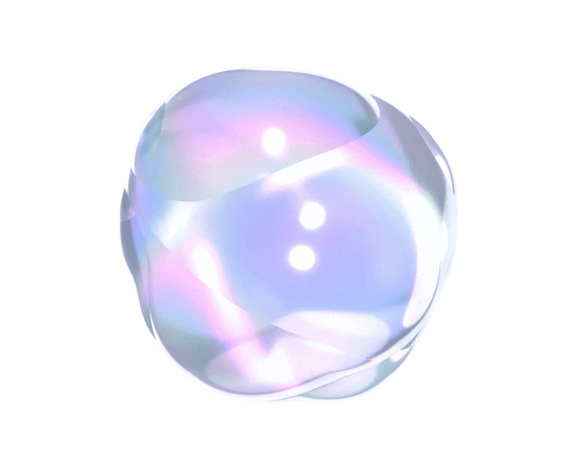
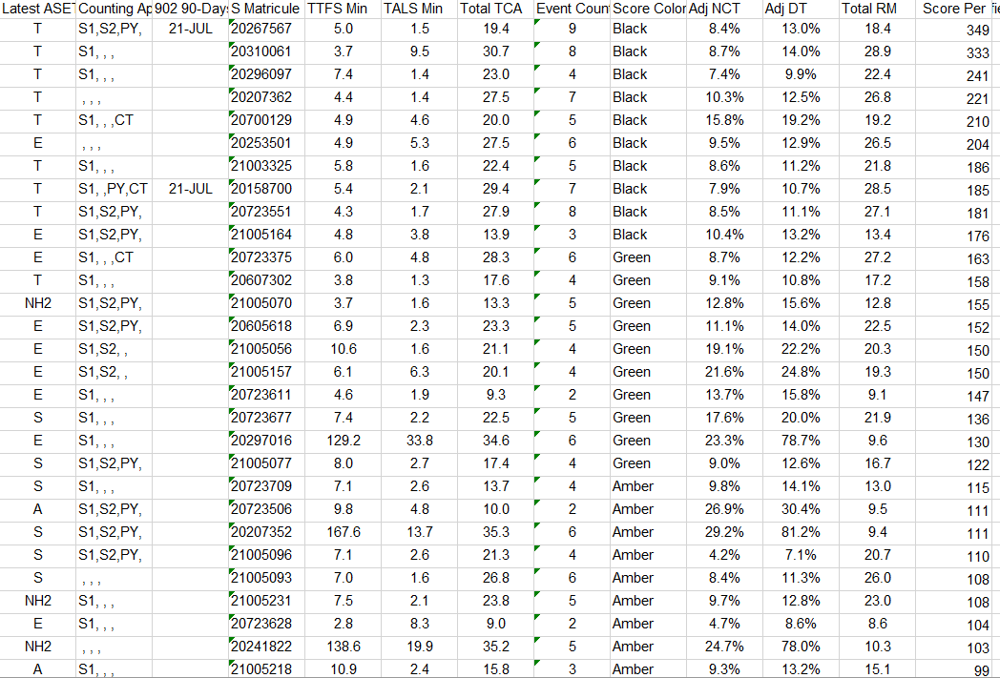
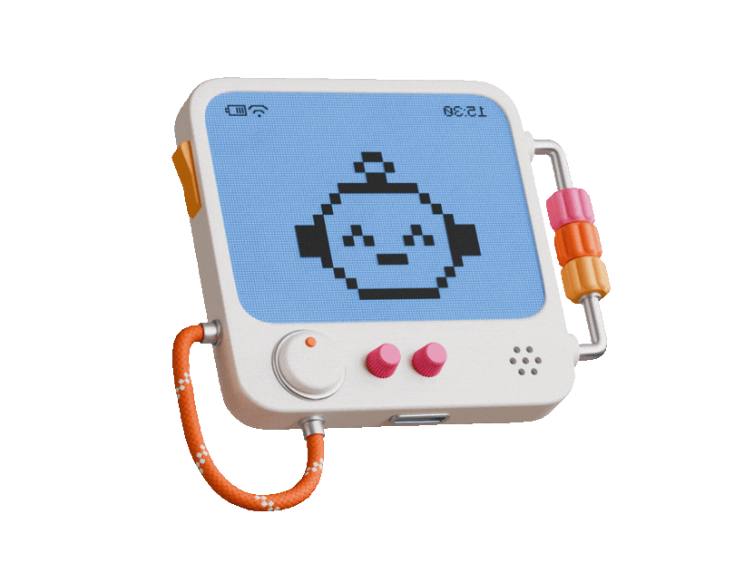
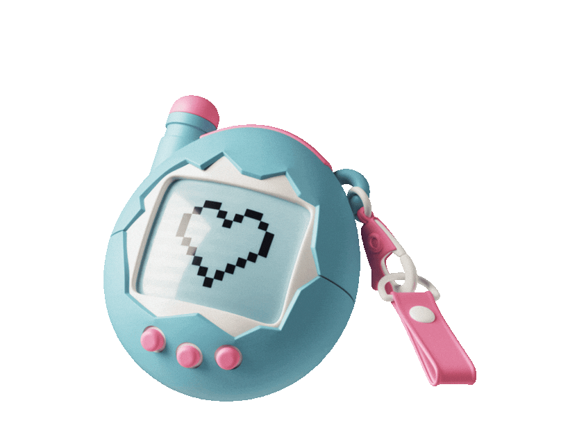
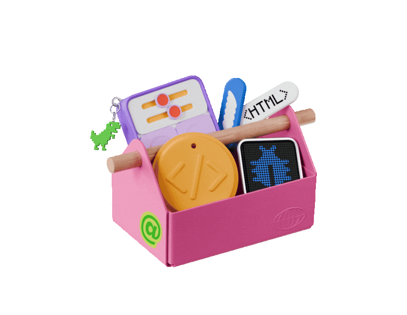
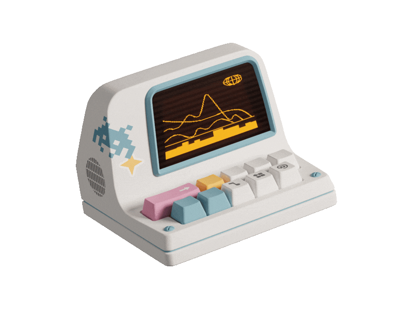

Case 01
Global internal session
ChatRGIS AI Webinar
Click when you’re ready or press Space
Rewrite this email.
Summarise this document.
Give me 5 ideas.
One request→One answer
Analyse this file and tell me what matters.
Keep an eye on this and tell me when something changes.
Build me a tool to do this.
Help me plan this project.
A goal→Multiple steps→Result
So, what can we actually do with it?
Case 02
Find the Story

Case 03
Make It Real
Case 01 — Stay Ahead
Mexico City · District Manager
A new opportunity?
OI
ChatRGIS
Case 01 · Stay Ahead
Mexico City opportunity watch
You
I'm a District Manager covering Mexico City.
We recently completed a successful inventory for a MINISO store, and I'd like to explore opportunities with other stores from the same chain.
Can you find other MINISO stores in my area and give me their names and locations?
OI ChatRGIS
Here's a list of other MINISO stores across Mexico City and greater metro area you could approach for similar inventory opportunities:
Central / South CDMX
- Miniso Insurgentes Flagship — Av. Insurgentes Sur 414, Hipódromo Condesa, Cuauhtémoc
- Miniso Condesa — Av. Sonora 180, Hipódromo Condesa, Cuauhtémoc
- Miniso Torre Latinoamericana — Eje Central Lázaro Cárdenas 2, Cuauhtémoc
...
You
Can you look for recent news about MINISO in Mexico City and the surrounding area?
I'm particularly interested in new or upcoming store openings, expansions, or other developments that could represent potential business opportunities for RGIS.
Please include dates and links to your sources.
OI ChatRGIS
Here's a roundup of recent MINISO news relevant to Mexico City and the broader Mexican market:
1. MINISO is rolling out large-format “Land” stores in Mexico (7 June 2026)
MINISO's founder and CEO, Ye Guofu, announced that during the second half of 2026, MINISO will introduce the “Land” store format in Mexico — units of approximately 800 m², roughly three times larger than the chain's typical Mexican stores (currently mostly under 300 m²).
The goal is to extend customer dwell time, expand merchandise displays (especially licensed/IP products), and boost average ticket size.
Source: ejecentral.com.mx
2. Mexico flagged as a top-3 global market, with mall push for “Land” and “Friends” formats (Q4 2025 earnings call)
...
You
This is really useful! I'd like to stay informed about new MINISO developments and potential business opportunities in my area, without having to remember to search for them every week.
What's the best way to do that?
OI ChatRGIS
I can set up a recurring automation that searches for MINISO news and sends you a summary automatically — no need to remember.
Monitoring schedule
How often would you like me to check for MINISO news and send you an update?
Weekly (Monday mornings)
Recommended
A concise digest of new MINISO developments from the past week.
Bi-weekly
Every two weeks, useful if you want less frequent updates.
Monthly
A broader monthly roundup, best if you only need major developments.
Other
Type your answer.
Preview only · no automation is created
You
That's great! But now that I know you can do this, I'd actually like to go a step further.
Instead of monitoring just MINISO, could you give me a weekly brief on retail developments across Mexico City and the surrounding area?
I'm interested in new retailers entering the market, upcoming store openings, expansions, major changes to existing retail chains, or anything else that could represent a potential business opportunity for RGIS.
Keep it concise, include links to the sources, and focus on genuinely new developments rather than repeating the same news every week.
Could we set that up for every Monday morning?
Sales / Key Account Managers
Customer Watch
Keep an eye on developments affecting an existing customer.HR
Employment & Labour Updates
Stay informed about regulatory changes without checking official websites manually.Training / L&D
Learning Innovation Watch
Discover useful developments in workplace learning and digital training.Recruitment / Marketing
Local Events Watch
Find opportunities to connect with potential candidates.Case 01 Stay ahead
—
“It's not about X — it's about Y.”
“The good news?”
“Absolutely! That's a great point!”
“This isn't just a tool. It's a game-changer.”
“Here's the thing:”
“Correct answer: 3”
“Why This Matters:”
Case 02 — Find the Story
X
PT A List.xlsxAuditor performance · Last week
•••

RGIS RTS · Last week’s performance
OI
ChatRGIS
Case 02 · Find the Story
PT A List.xlsx · Data conversation
You
X
PT A List.xlsxExcel spreadsheet · attached
I'm an RTS at RGIS, and I've attached a Tableau export showing my auditors' performance from last week.
What was the average TTFS across my teams last week?
OI ChatRGIS
Based on your attached Tableau export (PT A List.xlsx), across all 96 auditors listed for last week, the average TTFS (Min) was 25.27 minutes.
A few notes on the data:
A handful of outliers are pulling the average up — a few auditors show TTFS values around 130–142 minutes, versus the typical 3.5–12 minute range for most.
If you want, I can recompute the average excluding those outliers, or break it down by ASET rank, Score Color, or another column.
You
Good point! Let's exclude those outliers and recalculate the average TTFS.
Can you explain which values you're excluding and why, and show me how much the average changes?
OI ChatRGIS
Using the standard IQR method (values above Q3 + 1.5×IQR) on the TTFS Min column, here's what's flagged as an outlier and the recalculated average:
Why these were flagged:
Q1 = 5.5 min and Q3 = 10.33 min.
IQR = 4.83 min.
Values above approximately 17.56 minutes are statistical outliers.
14 auditors excluded, including:
- Auditor 63 — 169.7 min
- Auditor 23 — 167.6 min
- Auditor 31 — 163.9 min
- …
Result:
All 96 auditors25.27 min
→
82 remaining7.12 min
Difference −18.15 minutes (−71.8%)
These 14 cases are worth investigating separately rather than being folded into a single team average.
You
That's interesting. Now I'd like to take a step back from TTFS.
Looking at the entire report, is there anything else that stands out to you?
Think like an RTS reviewing last week's auditor performance. What trends, unusual results, or potential areas for improvement do you notice?
Focus on the findings that would actually be useful for me, and explain why they're worth my attention.
OI ChatRGIS
Red and Amber dominate
37 Red and 39 Amber auditors out of 96. Approximately 79% of the roster is in these two bands.
Downtime and performance
Average adjusted downtime by Score Color:
- Black: 12.8%
- Green: 22.7%
- Amber: 26.6%
- Red: 26.6%
Several very low-scoring auditors also show exceptionally high downtime. This is an observed relationship, not a proven cause.
New-hire groups
NH1 and NH2 account for 50 of the 96 auditors.
- NH1: average Score Per 58.4; 7 of 8 Red.
- NH2: average Score Per 70.5; 24 of 42 Red.
These groups may warrant closer investigation and support.
Limited event exposure
11 auditors worked only one event during the week. Their scores may need additional context before performance conclusions are drawn.
Potential data-quality issue
Auditor 96 has a negative TALS value of −5.0 minutes. This should be checked in the source system before drawing conclusions.
Where I'd focus first: Review Red-band new hires with high downtime, investigate the unusual data for Auditor 96, and look separately at auditors with only one event.
You
These are some interesting findings!
Could you create a few charts to help me visualise the most important points you've identified?
Choose the charts you think would be most useful for an RTS reviewing last week's performance. Keep them clear and easy to understand.
OI ChatRGIS
You
Let's take these visualisations to the next level.
I'd like you to create a polished, professional set of charts based on the auditor performance data I've uploaded, suitable for presenting to RGIS management.
This time, I want something much more sophisticated than basic charts.
Visual design
- Use an RGIS-inspired colour palette: deep navy, blue, cyan, and clean neutral tones.
- Give all charts a consistent, premium business-intelligence aesthetic.
- Use clear typography, strong visual hierarchy, thoughtful spacing, and well-positioned labels.
- Make the charts visually engaging while keeping them professional and easy to read.
What to visualise
Choose the most meaningful findings from our analysis, including:
- The distribution of auditors across Score Color bands.
- Performance differences across ASET ranks.
- The relationship between adjusted downtime and performance score.
- TTFS distribution, highlighting the impact of statistical outliers.
- Any other particularly useful finding supported by the data.
Choose the best chart type for each finding rather than using the same format repeatedly.
Presentation quality
- Give every chart a meaningful, insight-driven title rather than just naming the variables.
- Include exact values and useful annotations where appropriate.
- Highlight the most important observations visually.
- Make the charts readable on a large screen during a management presentation.
- Create a cohesive visual style across the entire set.
- Include a short, clear takeaway for each chart.
Accuracy
- Use only the actual data from my uploaded file.
- Check calculations and ensure percentages use the correct denominators.
- Clearly distinguish statistical observations from possible explanations.
- Do not invent benchmarks, targets, or historical comparisons.
- Do not remove outliers without clearly indicating it.
Output
Generate the actual charts as high-quality visualisations that I can view and use in a presentation.
Where supported, provide them as downloadable PNG or SVG images.
Do not create an HTML page, website, interactive dashboard, or application. I only want a beautifully designed collection of charts.
Aim for something that looks like it was prepared by a professional data visualisation specialist for an RGIS management review.
OI ChatRGIS
Our strange relationship with AI

😠 😤 😡 💢
❤️ 💕 💖 🥰 💗Case 03 — Make It Real
DISTRICT XX
2
DISTRICT XX
1
DISTRICT XX
3
OI
ChatRGIS
Case 03 · Make It Real
Detail.xlsx · Project design conversation
You
X
Detail.xlsxExcel spreadsheet · attached
I'm an Operations Manager at RGIS, and I've attached an APICS Tableau export containing all the inventories completed by one of my districts over the past year.
I'd like to turn this data into something much more engaging than a regular report or a few charts.
I'm imagining something interactive, where I could explore the district's performance, discover interesting statistics, see its biggest achievements.
The problem is, I don't really know how to create it.
Could you help me figure out what's possible and how we could build it?
OI ChatRGIS
Turning an APICS export into something people actually want to click through (instead of skimming a PDF) is very doable — and your file already has everything needed: PPH, APH, accuracy %, pieces, hours, auditors, dates, stores, supervisors.
Here's what's realistically on the table:
Option 1 — Interactive HTML dashboard (recommended)
A single self-contained web page you open in any browser, no install needed.
It could include:
- Filters by store, supervisor, month and event type.
- KPI cards showing pieces counted, PPH/APH, accuracy and hours.
- A Hall of Fame highlighting achievements.
- Charts that react to filters.
Pros: Visually engaging, shareable, works offline.
Cons: Standalone file, not connected to live data.
Option 2 — Interactive Excel workbook
PivotTables and slicers that people can explore directly in Excel.
Pros: Familiar and easy to share.
Cons: Less visually engaging.
Option 3 — Tableau
A live, drillable reporting experience built with the Tableau team.
Pros: Better suited to a long-term, regularly refreshed solution.
Cons: Requires the relevant Tableau development access and support.
My suggestion: Start with the HTML dashboard. I can build it from your actual file.
✦
Pick a directionWhat would you like to create?
Interactive HTML dashboardStandalone, visual and shareable
RecommendedInteractive Excel workbookPivotTables and slicers in Excel
Guidance for TableauPlan a live reporting solution
OtherDescribe another direction
You
Actually, let's not build the dashboard just yet.
I'd like to get this right from the start, so instead of jumping straight into creating something, let's work together on designing the best possible version of it.
I want you to help me create a really detailed, well-structured prompt that I can give to another AI conversation to build the dashboard.
So first, ask me questions one at a time to understand exactly what I want: the purpose, the audience, the features, the visual style, the kind of insights I'd like to explore, and anything else that matters.
Feel free to suggest creative ideas or features I might not have thought of, and challenge me if something isn't clear or doesn't make sense.
Once we've worked through everything, I want you to write the final, comprehensive prompt for me.
But for now, don't build anything. Let's design it together first.
OI ChatRGIS
Good approach — getting the brief right first will save a lot of back-and-forth later.
Looking at your file, I can already see it's rich enough for this: per-event data with store, customer, supervisor, dates, PPH, APH, accuracy %, pieces, hours, auditors and PIQA comments.
Let's start with the most important question:
Who is this dashboard actually for, and what's the main occasion you'd use it?
A. Internal team motivation
Something you'd show your supervisors or auditors to celebrate wins and build friendly competition.
B. Management / executive storytelling
Something you'd present upward or to customers to demonstrate district performance.
C. Your own exploration tool
Something for exploring trends, spotting issues and preparing conversations with your team or customers.
Which one is closest — or is it a mix?
A
Internal team motivationCelebrate wins and build friendly competition
B
Management / executive storytellingPresent performance upward or to customers
C
Your own exploration toolExplore trends and prepare conversations
You
C. My own exploration tool, but I do like nice visuals even if it's just for me.
OI ChatRGIS
...
You
...
OI ChatRGIS
...
You
...
OI ChatRGIS
...
You
...
OI ChatRGIS
...
You
...
OI ChatRGIS
Ready to build the idea

